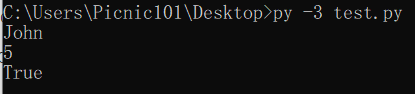
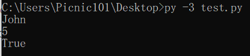

Installation (การติดตั้ง)
ในการติดตั้งภาษา Python นั้น วิธีการคือให้เราเข้าไปที่เว็บไซต์ python.org จากนั้นไปที่หน้า download และเลือกเวอร์ชั่นและระบบปฏิบัติการที่ต้องการ (เนื้อหาในเว็บไซต์นี้จะเป็น Python 3.7.4)

ในตอนติดตั้งนั้นให้เราเลือกช่องที่เขียนไว้ว่า "Add Python 3.7 to PATH" เพื่อที่จะทําให้เราสามารถเรียกใช้ Python ผ่านทาง CMD ของเราได้นั้นเอง

จากนั้นเราสามารถทดสอบได้ว่าเราติดตั้งเรียบร้อยแล้วด้วยการเปิด CMD แล้วพิมพ์คําว่า "py"

ในการรันภาษา Python นั้นเราสามารถรัน Python ได้หลักๆ2วิธีตามนี้เลยครับ
- Interactive Mode คือการที่เราพิมพ์ Code ที่ต้องการจะรันในแต่ละบรรทัดและผลลัพธ์ก็จะออกมาตามแต่ละบรรทัด
- Script Mode คือการที่เรามีไฟล์ .py ที่เป็นโค้ดแล้วนํามารัน
การใช้งาน Interactive Mode ง่ายๆเลยครับเราก็เปิด cmd หรือจะเข้าตัว IDLE ที่มีมาให้หลังจากติดตั้ง Python แล้วก็ได้ครับ

การใช้งาน Script Mode เราสามารถทําได้โดยการเปิด cmd และพิมพ์ "py -3 <ชื่อไฟล์>.py" จากนั้น Python ก็จะนําโค้ดที่อยู่ข้างในไฟล์นั้นมารัน หากเราใช้ IDLE ของ Python ก็สามารถรันได้โดยการกด F5 ครับ


Data Type & Varieble (ชนิดของข้อมูล & ตัวแปร)
ก่อนที่เราจะไปรู้จักกับตัวแปรเราต้องรู้จักกับ ชนิดของข้อมูลใน ภาษา Python กันก่อนครับซึ่งจะมีตามนี้เลย
| Type | Example |
|---|---|
| ตัวอักษรและข้อความ (String) | "Hello world", 'hi', "2019" |
| ตัวเลขจํานวนเต็ม (Integer) | 6, 8, -5, 101, 187 |
| ตัวเลขทศนิยม (Float) | 2.0, 87.1, -5.5 |
| ค่าความจริง (Boolean) | True, False |
| ลิสต์ (List) | [5, 1, "hi", 5.5, True] |
| ดิกชันนารี่ (Dictionary) | {"John": 55, "Bob" : 879} |
| ทูเพิล (Tuple) | (5, 9, 10, 54, 5.1, True) |
| เซ็ท (Set) | {5, 9, 7, 8, True} |
ซึ่งเราสามารถกําหนดค่าตามชนิดข้อมูลข้างต้นนี้ให้กับตัวแปรได้ครับ ยกตัวอย่างเช่น

จากโค้ดข้างบนหมายความว่า
- ตัวแปร name มีค่าเป็นข้อความ(String) ว่า John
- ตัวแปร age มีค่าเป็นจํานวนเต็ม(Int) คือ 5
- ตัวแปร love_tree มีค่าเป็นค่าความจริง(Boolean) คือ True
และเราสามารถเรียกใช้ค่าที่อยู่ข้างในตัวแปรผ่านตัวแปรได้ครับ ยกตัวอย่างเช่น
 

เรายังสามารถแปลงค่าให้กับตัวแปรได้ด้วย โดยการใช้ Build in function ตามนี้เลยครับ
| ชนิดที่ต้องการจะแปลงให้เป็น | Build in function |
|---|---|
| ตัวเลขจํานวนเต็ม | int() |
| ตัวอักษรและข้อความ | str() |
| ตัวเลขทศนิยม | float() |
ส่วนชนิดของข้อมูลแบบอื่นๆเราจะไปลงรายละเอียดกันในหัวข้อหลังๆนะครับ


เราไม่สามารถแปลงข้อความที่มีตัวอักษรให้เป็น int และ float ได้เพราะจํานวนเต็มและทศนิยมไม่ควรจะมีตัวอักษร ส่งผลให้เกิด ValueError


Input & Output
Input คือการรับข้อมูลเข้ามา และ Output คือการแสดงผลลัพธ์ที่ได้ครับ
- ใน Python การรับ Input จะสามารถทําได้โดยใช้ Build in function ที่ชื่อว่า input() ครับ ซึ่งมันจะรับค่ามาเป็น String ครับ
- ใน Python การแสดงผลลัพธ์ออกมาทางหน้าจอ สามารถทําได้โดยการใช้ Build in function ที่ชื่อว่า print() ครับ
ยกตัวอย่างเช่น


หากเราอยากได้ Input ที่เป็นชนิดตัวแปรอื่นที่ไม่ใช่ String เราก็สามารถใช้ Build in function มาช่วยได้ครับ ยกตัวอย่างเช่น